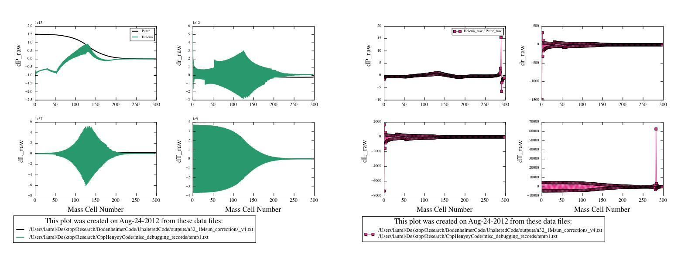

Figure
4
Date & Time: Aug. 25, 2012
Location: campus
Computing context: MachoMac
(/Desktop/Research/CppHenyeyCode/src, /Desktop/Research/BodenheimerCode/UnalteredCode)
From last time:
Write up what I figured out last time about why my G4J values are so different from Peter's.
Done-- see /Users/laurel/Desktop/desktopLabNotebook/2012/August/Aug_24_2012/G4J_manifesto.pdf.
Now, I'd really like to get an html version of this write-up created so I can include the contents directly in the wordpress blog write-up for today. I will come back to this later in the afternoon, though, because my initial research on doing this makes it look like it's not totally straight-forward to do.
Make the appropriate revisions to Helena's G4J calculation subroutine.
Done, but now I'm getting some wonky results out of my code. See Figure 1 for details.

Figure
1
To Do Today:
Figure out why I'm still getting these ridiculous dX profiles from Helena, even though I've fixed the G4J calculations
Compare the G profiles.
Need to get the G values at each mass cell out of Peter's code
Already done. See /Users/laurel/Desktop/Research/BodenheimerCode/UnalteredCode/outputs/g_values_for_python.txt
Get the G values at each mass cell out of Helena
Done. See /Users/laurel/Desktop/Research/CppHenyeyCode/misc_debugging_records/G_values_debugging.txt
Write up a python script to read in and plot both of them
Done. See /Users/laurel/Desktop/Research/BodenheimerCode/plot_parse_utils/compare_G_values.pyxs
Plot the G's from Helena against the G's calculated by Peter's code to see where/if they differ.
Done. See results in Figure 2:
A comparison of the four sets of G values generated by
Helena vs. Peter's code. The G3J values are the same in both codes.
Everything else is very different, even though Helena's G4J
calculations have been updated to (supposedly) calculated the G4J
values correctly (as they are in Peter's code).
Figure
2:
Why are the G3J values exactly the same between the two codes, when all of the other Gs differ so substantially between the codes?
Got the G4J calculations more-or-less fixed. Mostly. I think.
The G2J calculations are still off between the two codes, though.
Checking the dM (aka Mj+1 - Mj in Helena) values against each other
They're identical. See Figure 3.
Figure
3
Check the rj^3 - rj-1^3 quantity in the G2J calculations & compare the results between codes.
Significant differences between the codes. See Figure 4.
Maybe these are caused by precision differences in the r values being used in Peter's code, vs. the values that I had his code print out (and then read into Helena as part of the initial model)?
That could well be it, since the cdeg_var_values I've been reading into Helena only have a few significant figures.
Figure
4
Get Peter's code to write out the starting model (again), but with greatly increased precision/sig. figs.
Done. Results in /Users/laurel/Desktop/Research/BodenheimerCode/UnalteredCode/outputs/more_precise_cdeg_var_values.txt
This does get the r_{j}^3 - r_{j-1}^3 values to agree between the codes (see Figure 5).
Figure
5
Check whether or not Helena and Peter's G values agree, now that I'm reading in the full-precision MLRTP values into Helena.
Done. Figure 6 seems to show good agreement between the two.

Figure
6
The dX values generated by the two codes still differ markedly, though.
Start here tomorrow
Insert a figure illustrating the existing differences
And start trying to figure out what's still causing them.
Update the wordpress blog.
To keep in mind for later:
For the 1 Mjup model: do the Peter and Helena models' dX values (raw) now agree, too?